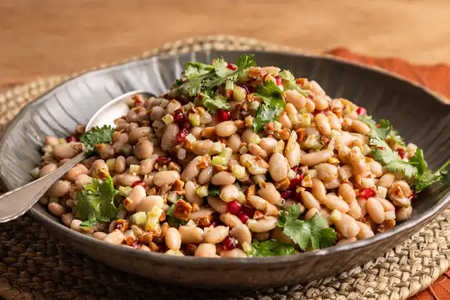

Salada de feijão branco com chuchu

Descrição
Preste atenção nesta mistura de texturas e sabores: o feijão-branco cremoso contrasta com a crocância do chuchu
cru; o coentro e o limão chegam com tudo para dar frescor; e as sementes de romã complementam e deixam a salada
linda. A cara das festas de fim de ano, né?
Ingredientes
- 3 latas de feijão-branco cozido (4⅓ de xícara [chá] de grãos escorridos)
- 1 chuchu
- ¾ de xícara (chá) de amêndoas com pele torradas e sem sal
- ½ xícara (chá) de azeite
- raspas de 1 limão
- ¼ de xícara (chá) de caldo de limão coado (cerca de 2 limões)
- ½ xícara (chá) de sementes de romã
- ½ colher (chá) de sal
- 3 ramos de coentro
- pimenta-do-reino moída na hora a gosto
Modo de preparo
- Descasque, lave e seque bem o chuchu — assim ele não escorrega na hora de cortar. Com uma colher, descarte
as sementes. Corte o chuchu em fatias de 0,5 cm, as fatias em tiras de 0,5 cm e as tiras em cubos. Transfira
para uma tigela grande.
- Pique as amêndoas grosseiramente. Lave e seque as folhas de coentro.
- Para o molho: num pote (que tenha tampa), junte o azeite, as raspas e o caldo de limão, o sal e pimenta a
gosto. Tampe e chacoalhe bem para misturar.
- Abra as latas de feijão e transfira para um escorredor de macarrão. Passe os grãos sob água corrente,
delicadamente, para tirar o restante da conserva e deixe escorrer bem a água.
- Junte o feijão ao chuchu, adicione as amêndoas picadas, as folhas de coentro inteiras e as sementes de romã
(reserve 2 colheres [sopa] para decorar a salada).
- Tempere a salada com o molho e misture delicadamente — cuidado para não mexer demais e desmanchar os grãos
de feijão. Sirva a seguir.
Dicas de planejamento
Você pode deixar a amêndoa picada com antecedência. Já o chuchu picado, o coentro lavado e o molho podem ficar na
geladeira de um dia para o outro. Na hora de servir, é só misturar tudo.
Fonte
Panelinha